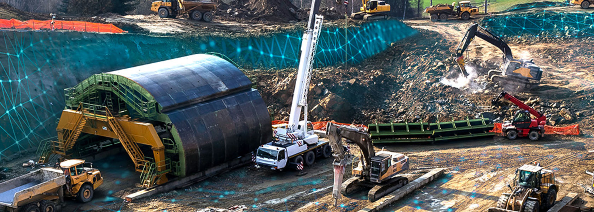

Bentley Systems announces the availability of OpenGround Cloud
Bentley Systems has launched OpenGround Cloud, a new cloud service designed to provide geotechnical professionals with access to reliable geotechnical data. OpenGround Cloud offers a comprehensive solution for planning, data entry, borehole log production, lab data management, reporting, visualization, and more. The service aims to improve collaboration among multi-disciplinary project teams and enhance the value of geotechnical data by making it easily accessible to key stakeholders.
By providing a single enterprise repository for multiple data sources related to ground investigation projects, OpenGround Cloud eliminates the need for data copies and facilitates secure data exchange. It ensures that all project participants have the correct access rights to the most up-to-date version of the data. This helps to minimize project delays caused by unforeseen ground risks during construction.
Geotechnical and geological professionals can benefit from OpenGround Cloud's risk management capabilities, allowing them to identify data gaps, highlight risk items, and plan targeted ground investigations. From the tender process, when site data availability may be limited, to detailed design stages, data-driven assessments can aid decision-making.
The cloud-based service also enables organizations to determine and cross-reference their geotechnical parameters and correlations with those available from literature sources. This enhances efficiency in tender design, reduces geotechnical risk, optimizes ground investigations by considering multidisciplinary and multi-project data, and delivers more comprehensive and valuable detailed designs to clients.
Users of OpenGround Cloud have reported improved workflows and productivity. The cloud-based database offers faster performance, particularly with large datasets such as cone penetration test (CPT) data. The cloud infrastructure also facilitates seamless data access for external support teams, ] enabling quicker issue resolution and minimizing potential project downtime.
OpenGround Cloud represents a significant step forward in geotechnical engineering, providing a centralized platform for geotechnical data management and collaboration. By streamlining workflows and enabling better decision support, the service enhances efficiency, reduces risk, and improves outcomes in geotechnical projects.
Link do the article:
https://www.automationrobotics.in/bentley-systems-announces-the-availability-of-openground-cloud/
